国家美术馆探秘
按段回读课文与原有漫画。数字以课文为准；画作与颜色变化图为示意。
第一段
新加坡国家美术馆位于市政区，占地6万4000平方米，大约有9个足球场那么大。它是东南亚地区面积最大的艺术博物馆之一，收藏了许多举世无双的东南亚艺术珍品。

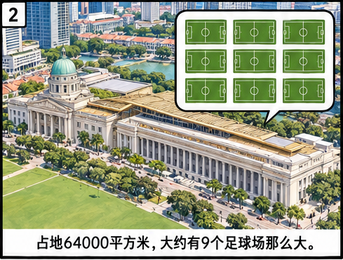
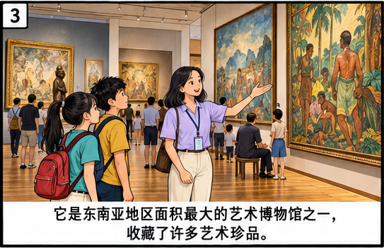
第二段
你知道吗？新加坡国家美术馆藏着许多有趣的“秘密”，让我们一起去探索一下吧。
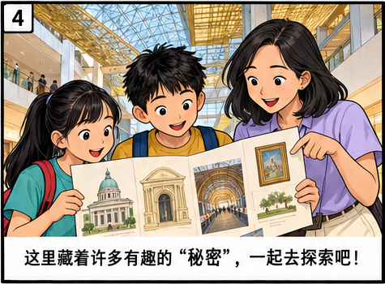
第三段
要探索国家美术馆的“秘密”，首先要从它的建筑开始。实际上，国家美术馆是由前最高法院和政府大厦合二为一，改建而成的。这两座标志性的历史建筑建于殖民地时代，在新加坡历史上扮演过举足轻重的角色。前最高法院在60多年里一直是新加坡司法制度的最高殿堂，政府大厦则见证了多个历史事件，例如，日本投降和新加坡宣布自治等。
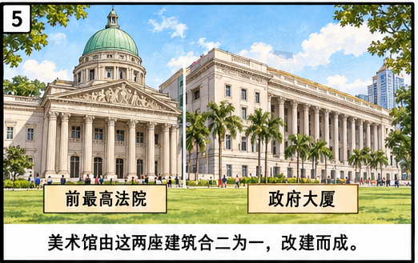
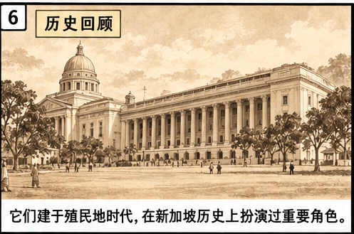
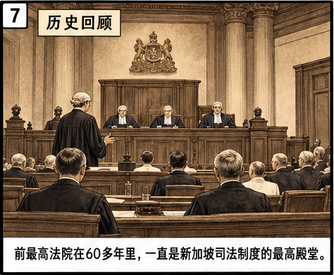
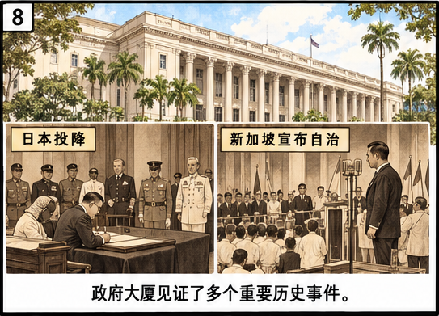
第四段
今天，国家美术馆还保留着这两座建筑的部分原貌，例如，法庭内法官的座位、被告栏、棕色天花板等。这里有个鲜为人知的“秘密”——地下通道。那时，犯人不是从大门进来，而是从这个特别通道直接进入法庭被告栏的。
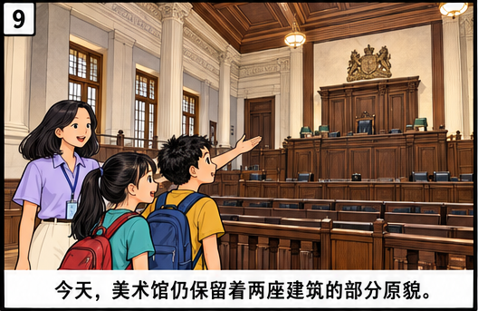
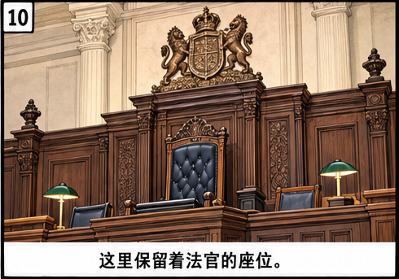
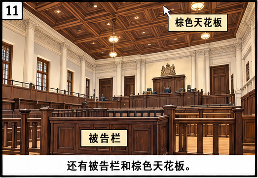
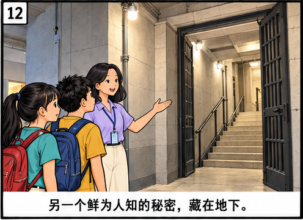
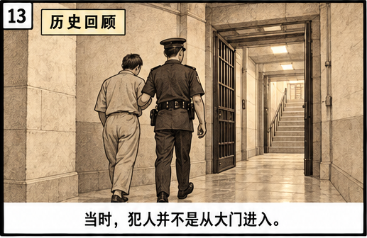
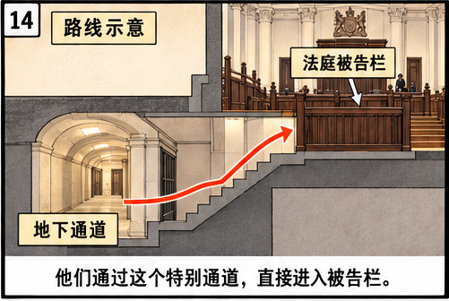
第五段
国家美术馆里的门也藏着“秘密”。馆内悬空桥两端古色古香的大门原本是窗户，经过设计师的巧思妙想，变成了我们现在看到的门，多有意思！
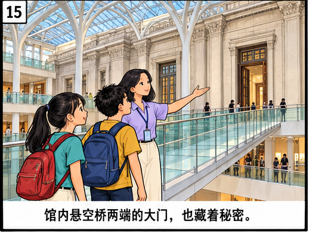
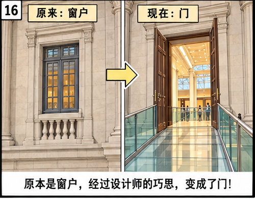
第六段
来到五楼，你甚至可以近距离观赏前最高法院的圆顶，这里也有个小“秘密”，这圆顶原本不是铜绿色的，是经过长年的氧化才变成现在这样的。
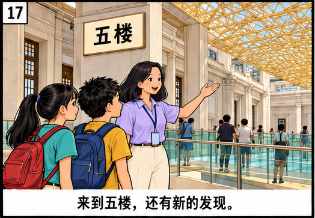
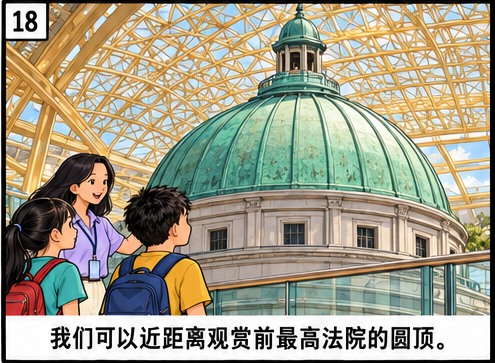
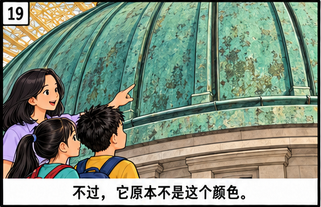
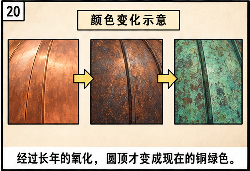
第七段
我们要探索的“秘密”还藏在国家美术馆的画作中。国家美术馆里馆藏丰富，共有9000余件收藏品，其中一幅画被称作“钱包里的名作”。对大多数人来说，它既熟悉又陌生。熟悉，是因为它就印在50新元钞票的背面，每个人都见过；陌生，是因为大多数人对这幅画并不了解。这幅名为《晒咸鱼》的画，展现了马来同胞晒咸鱼的场景，画面宁静而平和。在画家钟泗滨的笔下，过去东南亚沿海村落中常见的生活画面被生动地表现了出来。
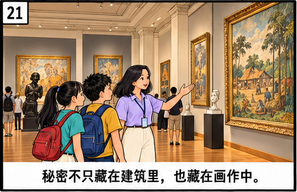
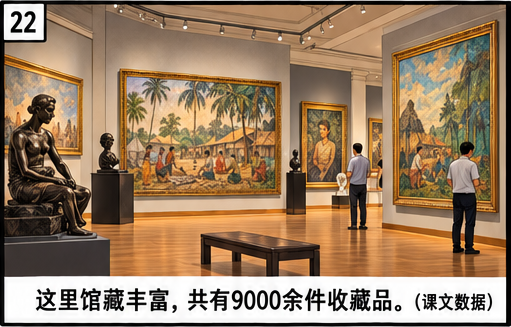
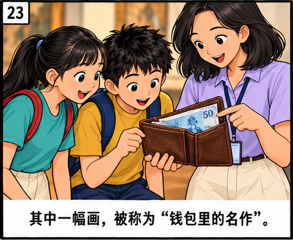
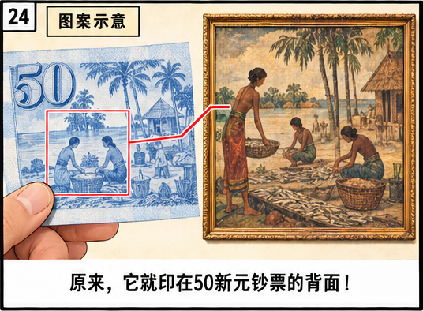
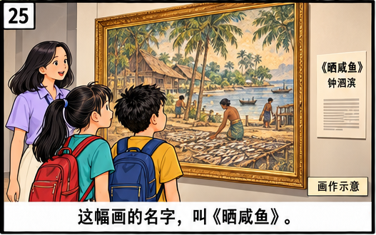
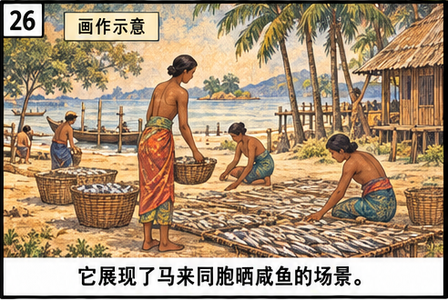
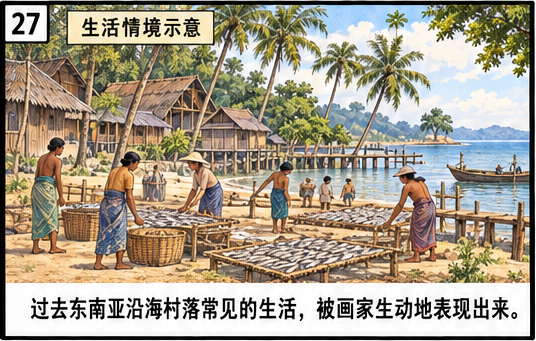
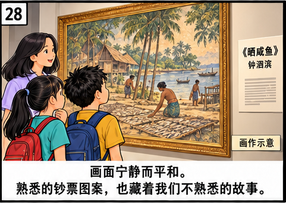
第八段
国家美术馆的建立是我国推动艺术发展的重要的里程碑，它为我国长期以来收藏的大量东南亚艺术品，尤其是本地艺术家的优秀作品提供了一个永久的展示空间。在这个历史与艺术交融的美术馆里，还有很多“秘密”等待着你去探索、发掘。亲自去走一走，看一看，感受那浓浓的历史和艺术气息，说不定你也会有新发现，找到属于自己的秘密。
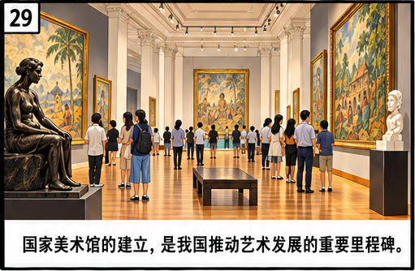
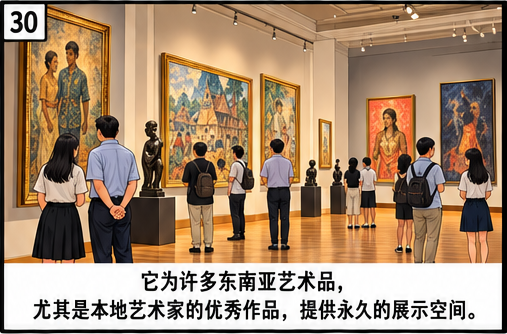
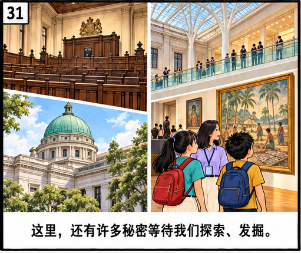
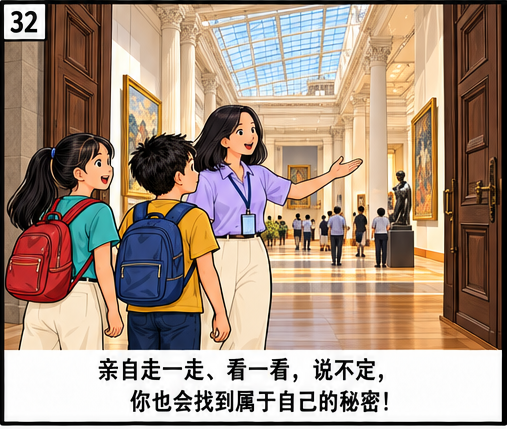
查看四页完整原漫画
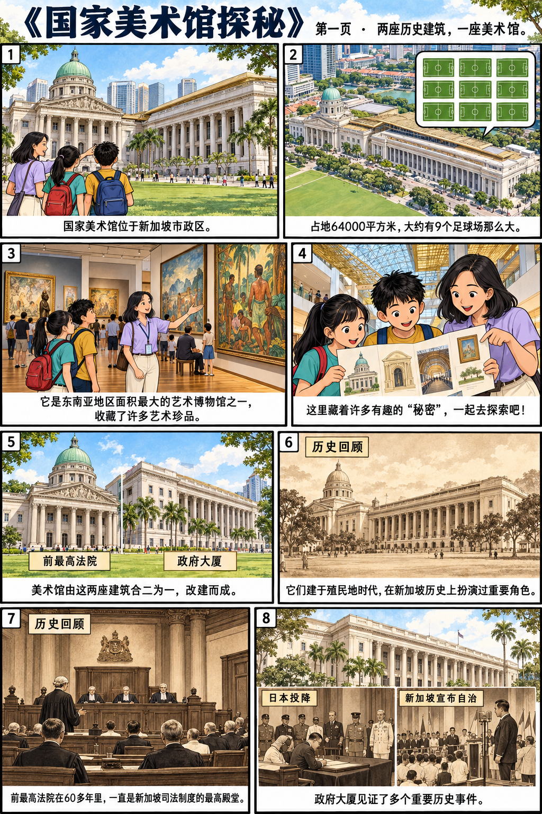
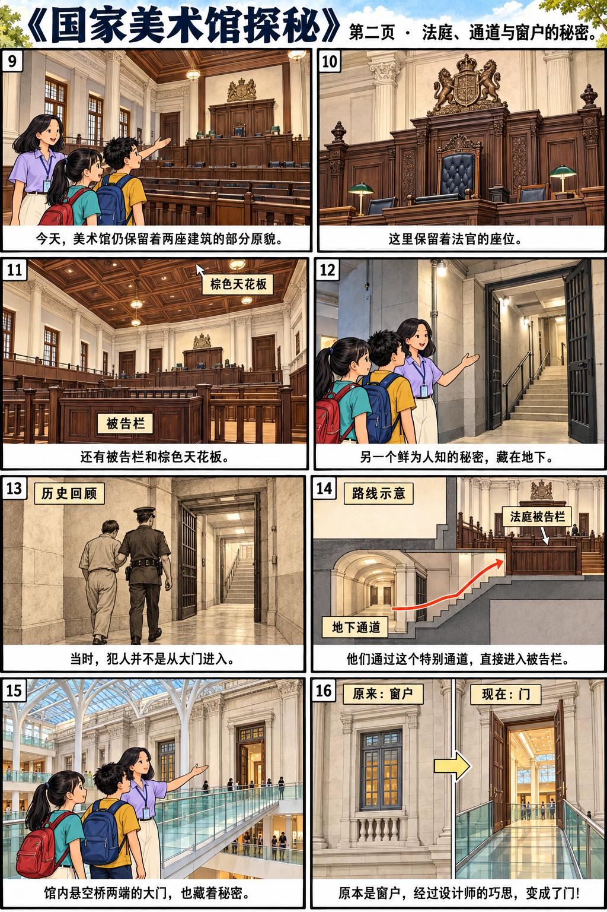
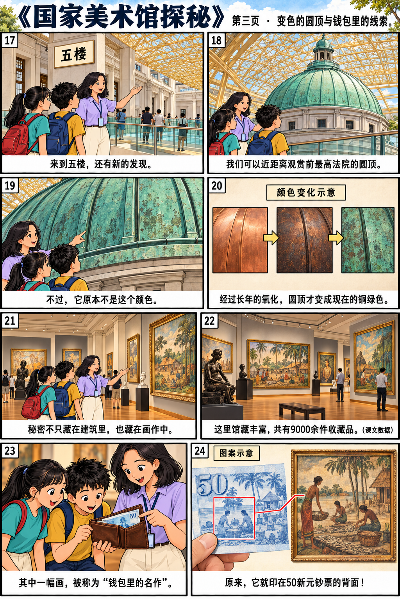
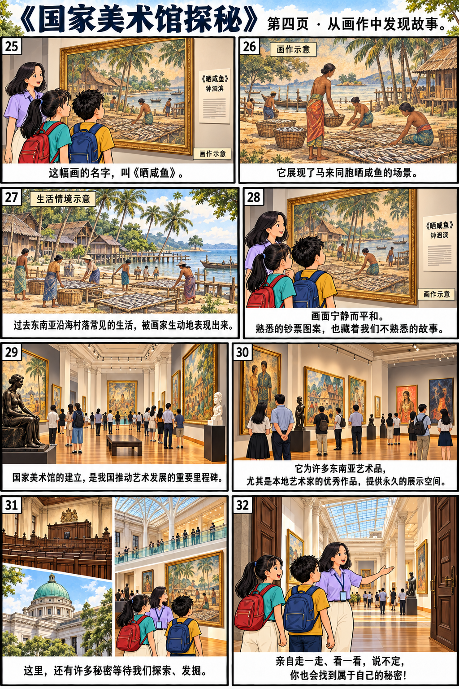